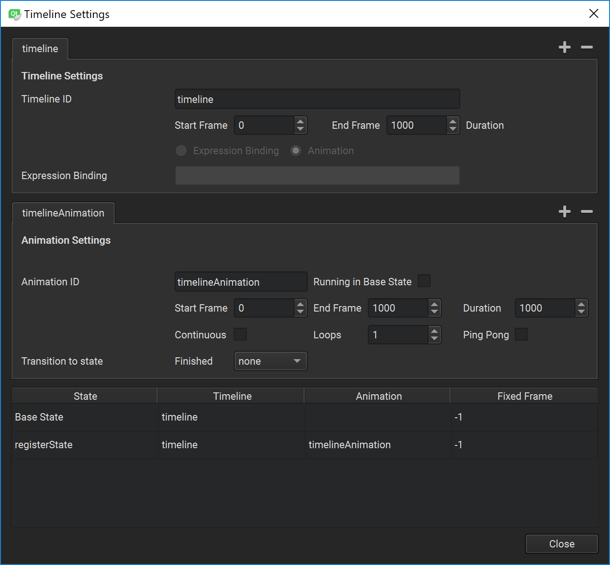
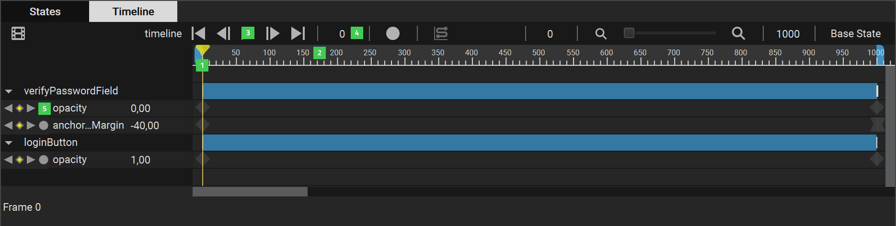
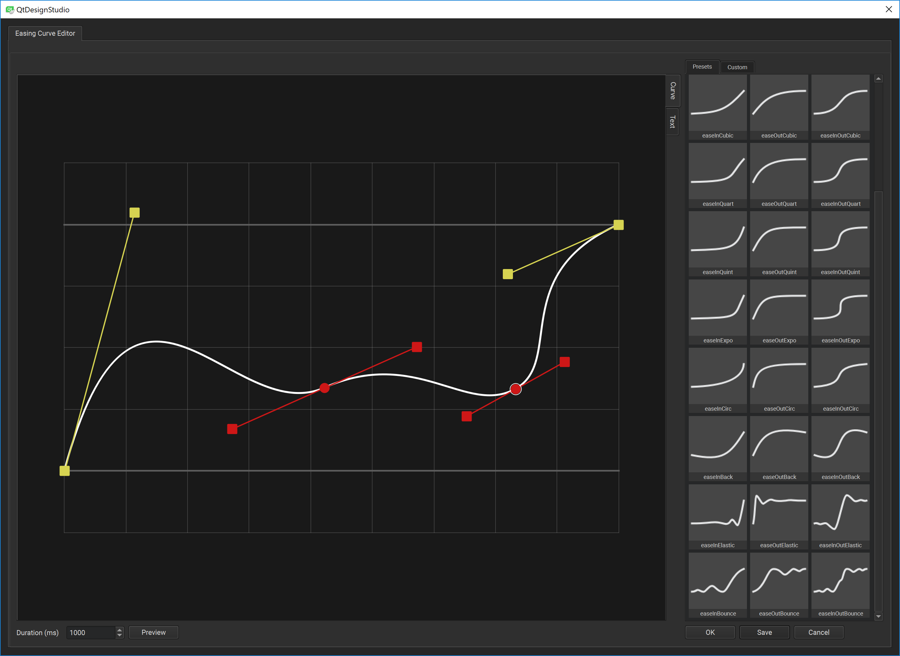

Creating Animations
You can use the timeline and keyframe based editor in the Timeline view to animate the properties of UI components. Animating properties enables their values to move through intermediate values instead of immediately changing to the target value. For example, to move an item in a scene, you can animate the properties that control the item's position, x and y, so that the item's position changes at keyframes on the way to the target position. Similarly, you could change the color and scale properties of the item at keyframes to make it appear to move closer or farther away.
Qt Quick allows you to declare various UI states in State objects. These states are comprised of property changes from a base state, and can be a useful way of organizing your UI logic. Transitions are objects you can associate with an item to define how its properties will animate when they change due to a state change.
You can find a video tutorial about creating timelines and adding keyframes here.
Enabling the Timeline Editor
The Timeline view is not visible in Qt Creator by default. To enable it, select Tools > Options > Qt Quick > Qt Quick Designer > Enable Timeline editor. You need to restart Qt Creator for the Timeline view to appear.
To be able to create timelines, you also need the Qt Quick Timeline module. At the time of this writing, the module is not available as a library in the Qt installer, and therefore you must check out the repository and build the module yourself using the same Qt version that you used to build Qt Creator.
You can check out the module from Qt Code Review Tool.
Creating Timelines
You specify settings for the timeline and for running the animation in the Timeline Settings dialog.

To create a timeline to animate a UI component:
- In the Navigator, select the item to animate.
- Select the Timeline tab to open the Timeline view.
- Select the
 (Add Timeline (A)) button, or press A to specify settings for the timeline and running the animation in the Timeline Settings dialog.
(Add Timeline (A)) button, or press A to specify settings for the timeline and running the animation in the Timeline Settings dialog. - In the Timeline ID field, enter a name that describes the animated item.
- In the End frame field, set the duration of the animation.
- To use bindings to specify the properties, select the Expression binding radio button and enter the binding in the Expression binding field. For more information about property binding, see Setting Bindings.
- To create a timeline animation, select the Animation radio button.
- In the timelineAnimation tab, Animation ID field, enter a name for the animation.
- Select the Running in Base State check box to use the settings in this tab when previewing the UI. Deselect the check box to use the default settings.
- In the Start frame field, set the first frame of the animation.
- In the End frame field, set the last frame of the animation.
- In the Duration field, set the length of the animation from the start frame to the end frame. If you set a shorter duration than the number of frames, frames are left out from the end of the animation when viewing it.
- Select the Continuous check box to loop the animation indefinitely.
- In the Loops field, select the number of times to run the animation as a loop. The default number of loops is one, which means that you must restart the animation to see it again
- Select the Ping pong check box to play the animation backwards back to the beginning when it reaches the end.
- In the Transitions to states field, select the state to switch to when the animation finishes.
- Select Close to close the dialog and save the settings.
To create additional timelines, select the (Add Timeline) button next to the timeline tab.
To specify settings for running the timeline animations, select the (Add Animation) button next to the Animation Settings group. For example, you could create settings for running a part of the timeline animation between specified frames or for running the animation backwards from the last frame to the first.
To modify the settings, select the  (Timeline Settings (S)) button on the toolbar (or press S) in the Timeline view.
(Timeline Settings (S)) button on the toolbar (or press S) in the Timeline view.
Binding Animations to States
The table at the bottom of the Timeline Settings dialog lists the available states. Double-click the values in the Timeline and Animation column to bind the states to animations. In the Fixed Frame column, you can bind the states that don't have animations to fixed frames.
Managing Keyframes
To animate components in the Timeline view, move to a frame on the timeline and specify changes in the values of a property. Qt Design Studio automatically adds keyframes between two keyframes, and sets their values evenly to create an appearance of movement or transformation.
Navigating the Timeline

You can navigate the timeline in the following ways:
- Drag the playhead (1) to a frame.
- Click on the ruler (2) to move to a frame.
- Select the To Start (Home), Previous (,), or Next (.) buttons (3), or use the keyboard shortcuts to move to the first, previous, or next frame on the timeline.
- Enter the number of a frame in the field (4) to move to that frame.
- Select the Previous and Next buttons next to a property name on the timeline (5) to move to the previous or next keyframe for that property.
Setting Keyframe Values
You can insert keyframes for all the properties of all the components that you want to animate first, and then record the changes in their values by selecting the  (Per Property Recording) button for one property at a time. For example, you can hide and show items by turning their visibility off and on or by setting their opacity to 0 or 1.
(Per Property Recording) button for one property at a time. For example, you can hide and show items by turning their visibility off and on or by setting their opacity to 0 or 1.
You can also select the Auto Key (K) button (or press K) to record changes in property values, but you need to be more careful about which property values you are changing to avoid surprises.
To record the changes of property values:
- In the Navigator, select the item to animate.
- In the Properties view, select Settings > Insert Keyframe for the property that you want to animate.
- Select the Per Property Recording button to start recording property changes.
- Check that the playhead is in frame 0 and enter the value of the property in the field next to the property name on the timeline. Press Enter to save the value.
- Move the playhead to another frame on the timeline and specify the value at that frame.
- When you have specified as many values as you need, select Per Property Recording again to stop recording.
To remove all the changes you recorded for a property, right-click the property name on the timeline and select Remove Property.
Keyframes a marked on the timeline by using markers of different colors and shapes, depending on whether they are active or inactive or whether you have applied easing curves to them, for example.
To edit the value of the selected keyframe, select Edit Value for Keyframe in the context menu.
You can copy the keyframes from the keyframe track for an item and paste them to the keyframe track of another item. To copy all keyframes from one item to another one, select an item, and then select Copy All Keyframes in the context menu. Then select the other item and select Paste Keyframes in the context menu.
To delete the selected keyframe, select Delete Keyframe in the context menu.
To delete all keyframes from the selected item, select Delete All Keyframes in the context menu.
To add keyframes to the keyframe track of an item at the current position of the playhead select Add Keyframes at Current Frame.
Viewing the Animation
You can view the animation on the canvas by moving the playhead along the timeline.
Editing Easing Curves
Easing specifies the rate of a property value over time, so that components can appear to pick up speed, slow down, or bounce back at the end of the animation. By default, the animations you specify on the timeline are linear, which means that they move from the beginning to the end at a constant speed. You can use the curve picker to edit the easing curve at a keyframe.

You can use the preset curves or modify them by dragging the curve handlers around. You can add points to the curve and drag them and the point handlers to modify the curve. When you are happy with the curve, you can save it as a custom curve. For more information about easing curve types, see the documentation for easing curves.
To zoom into and out of the easing curve editor, use the mouse roller. To reset the zoom factor, right-click in the editor and select Reset Zoom.
To select easing curves:
- Select a keyframe on the timeline.
- Select Curve Picker (C) on the toolbar, or press C to open the Easing Curve Editor dialog.
- Select an easing curve in the Presets tab.
- In the Duration (ms) field, select the duration of the easing function in milliseconds.
- Select Preview to preview the curve.
- Select OK to attach the easing curve to the keyframe and to close the curve picker.
When you attach easing curves to keyframes, the shape of the keyframe marker changes from to .
To customize easing curves:
- In the Easing Curve Editor dialog, select an easing curve in the Presets tab.
- Drag the curve handlers to modify the curve.
- Right-click in the editor, and select Add Point to add points to the curve.
- Drag the points or the point handlers to modify the curve. If the curve becomes invalid, it turns red in the editor and the Save button is disabled.
- Select Save to save your changes to the curve.
- In the Name field, enter a name for the custom curve, and then select OK to save the curve in the Custom tab.
To paste easing curve definitions to the curve picker as text, select the Text tab.
Rotating Items
To animate components that rotate around a central point, you can use the Item QML type as a parent for the rotating component. Then create a timeline for the Item and set the rotation property for the start and end keyframes.